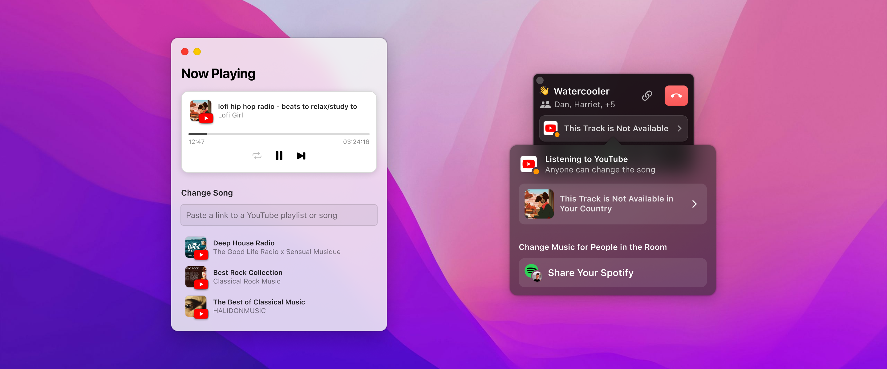
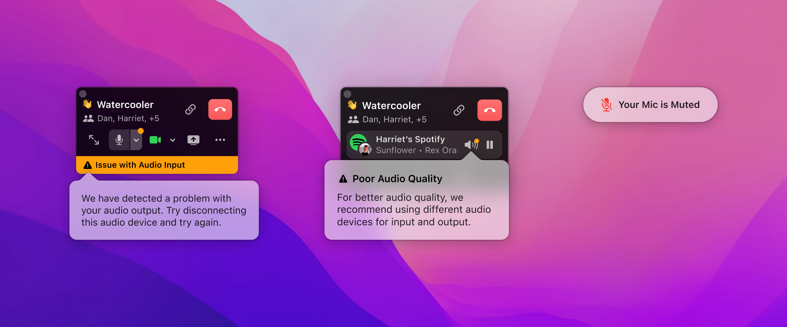

Coworking with Music
Multi (fka Remotion, acquired by OpenAI)
|
Product Design, macOS App
|
2022
Product Hunt: producthunt.com/products/remotion
Remotion was designed as a virtual office platform that facilitates casual conversations through coworking rooms and shared music. It was a macOS application that allowed users to pin their teammates to the dock, providing background awareness of each other's activities.
I was brought in as a product designer in the Core Experience team, tasked with implementing focused enhancements to the product's core experience. Working alongside five engineers, our collective aim was to boost user retention and encourage word-of-mouth promotion of Remotion.
Roadmap
The Core Experience team's strategy was centered around addressing the key issues causing user churn. Our objective was to achieve the "Beta Bar" — a threshold of quality we deemed acceptable during a phase of rapid iteration.
Despite this, it was crucial to deliver an experience that, although not flawless, was compelling enough for users to appreciate and recommend our product to others.
Identifying core expriences that needs the most love
Holistic Upgrade
The Coworking with Music experience aimed to create a comfortable environment where teams can work together in a shared space. The intention is for the music experience in coworking rooms to be seamless and intuitive. However, user feedback indicated that users found certain aspects of the UI and its behaviors confusing while coworking in a Remotion Room.
The primary design objectives centered on enhancing clarity and consistency regarding the room's activities, educating users on how the rooms function, and cultivating a shared experience that allows teams to cowork effortlessly. To address these challenges, we took a holistic approach, identifying and prioritizing opportunities to achieve our objectives across various aspects of the product.
User status and Room status
Media panel for YouTube
Audio alert system
Music Ducking | Deep Dive
In Remotion, Rooms serve as collaborative spaces where teams gather to work alongside each other, with music playing in the background to enhance the ambiance.
A key feature of these Rooms is "Ducking" — when someone begins to speak, Remotion automatically reduces the music volume to ensure clear communication among team members. To prevent any potential for feedback or echoes during conversations, volume control was disabled during ducking, ensuring that users cannot inadvertently increase the music volume while their microphone is active.
Original implementation
Problem
We discovered that users frequently experienced confusion and frustration due to their inability to adjust the volume while music was being ducked. This issue stemmed from the volume control's disabled state being too subtle, coupled with a lack of clear indication when ducking was in effect. Consequently, users were often confused about why the music volume decreased or why they were unable to modify the volume settings.
To resolve these issues, our approach focused on demystifying the volume control functionality during the ducking process and simplifying the volume adjustment mechanism to ensure it "just works" intuitively for the users.
New implemetation
Design Exploration
At the top level, our objective was to devise a straightforward method to convey the concept of ducking, empowering users to make informed decisions. This need for clear communication served as the driving force behind our design exploration.
The overarching principle for music in Remotion was that it should effortlessly integrate into the user experience, requiring minimal input from the users and avoiding any unnecessary complications.
Evolution of the Music Ducking UI iteration
Final Design
The final design employs animation to convey the concept of ducking, marking a departure from the traditional volume slider approach. It visually distinguishes the ducking volume as a distinct portion of the master volume, with the animation playing a crucial role in helping users understand the transition from a non-ducked to a fully ducked state. This illustrates the volume adjustment process in a clear and intuitive manner.
The ducked volume is set to a fixed percentage of the master volume, ensuring that adjustments to the master volume proportionately affect the ducked volume. This design choice allows users to focus on controlling the master volume without the need to manage the ducking volume separately, streamlining the user interaction for simplicity.
Music Ducking transition
Single Music Platform | Deep Dive
Remotion Rooms aim to improve the coworking experience by offering a musical backdrop through YouTube and Spotify, countering the awkward silence when coworking online. Music from YouTube plays automatically when someone enters, with an option to switch to Spotify if its desktop app is installed. This enables shared Spotify playlists while giving others the choice to stick with YouTube.
However, despite its popularity, users highlighted a sense of isolation, as allowing both, YouTube and Spotify to be used simultaneously might undermine the goal of creating unity and a shared experience in remote teams.

Original implementation
Goal
To address the issues of simultaneous music platform usage, I opted to enable only one platform at a time. This decision streamlines the UI, cuts down on complexity, and fosters unity in listening experience in Rooms.
My focus was on making Spotify more visible and user-friendly on the platform, clarifying the current track and its source, and indicating which team members are joining the Spotify stream, enhancing the sense of community in Remotion Rooms.
New implementation
Final Design
To prepare for the public launch of Remotion's Spotify feature and boost Spotify's discoverability against the default YouTube player, we aimed to encourage the first person in a Room to share Spotify music.
Given our decision to allow only one active music platform, it was crucial to motivate shared Spotify use and avoid leaving anyone in silence. We introduced an informative popover message for first-time Room joiners, promoting immediate Spotify engagement. If users didn't have the Spotify App or hadn't enabled permissions, the popover provided guidance to resolve these issues, ensuring full participation in the shared Spotify experience.
Suggesting Spotify to the first person in the room
I updated the UI to clearly show who controlled the music and replaced the "Change Song" button with the song's thumbnail, prioritizing the visibility of song details. This enhanced the shared music experience in Remotion Rooms, further supported by displaying the list of listeners, streamlining interactions and emphasizing the communal aspect of music listening.
What listeners see when listening to YouTube/Sharing Spotify
I implemented a popover notification to inform users of music platform switches in the room, ensuring seamless transitions and keeping everyone updated. This actionable notification allowed users to immediately choose to join or leave the new stream, maintaining the shared experience and real-time control over listening preferences.
Communicating what's happening when switching music platforms